-
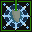
Frozen Arrow
Focus Ranger Combat Skill
Shoot a frozen arrow which deals ice damage and slows your target's movement and attack by 10..50..60% for 16 seconds. If this shot is a critical hit they are frozen in place for 1..6..7 seconds instead.
-
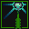
Flask Shot
Resolve Ranger Combat Skill
Shoot a bolt tipped with a flask of healing salve at target enemy that heals allies within melee range of them for 1..30..37-3..55..68.
-
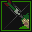
Headshot
No Stat Ranger Combat Skill
Launch a super-accurate attack that cannot be dodged or blocked and will never miss. If this attack scores a critical hit it deals 3x damage.
-
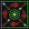
Focus
Resolve Ranger Stance
Adopt a focused stance for up to 30 seconds that causes your skills to recharge 25% faster. If your health falls below 99..50..38% your focus breaks and this stance ends immediately.
-
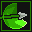
Renewing Bolt
Focus Ranger Combo Combat Skill
Shoot a renewing bolt at target enemy, if it hits one of your recharging combat skills will have its recharge time shortened by 1..10..12 seconds. If this attack triggered a combo effect an additional recharging attack skill will have its recharge time shortened as well.
-
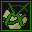
Ensnare
Resolve Ranger Skill
Throw a net at your target, slowing their movement speed by 25% for 5..30..36 seconds.
-
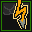
Lightning Dart
Focus Ranger Combat Skill
Instantly shoot a shocking arrow at target enemy that deals lightning damage. If you are effected by an equipment spell this attack has a 25..75..88% greater chance to be a critical hit.
-
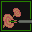
Remember Your Training
Survival Ranger Skill
For 10 Seconds your attacks deal +1..6..7 damage, or +2..20..24 if you are in a stance.
-
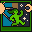
Tireless
Survival Ranger Enhancement Spell
You have a relentless energy about you that causes you to regenerate 5..50..61 energy and 12..66..80 health over the next 30 seconds.
-
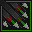
Rapid Fire
No Stat Ranger Stance
For 15 seconds you take a stance that allows you to shoot 25% faster.
-
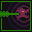
Howling Bolt
No Stat Ranger Combat Skill
Immediately fire a special bolt that makes a loud howling noise at target enemy, interrupting any spells that they're casting.
-
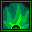
Poison Smoke Trap
Class Core Ranger Trap
Throw a smoke trap that has 5 health. When an enemy walks over the trap or it's destroyed it creates a cloud of poisonous haze, poisoning any enemies in the area for 5..66..81-9..99..122 damage over 10 seconds. The trap harmlessly deactivates after 30 seconds.
-
Snare Trap
Class Core Ranger Trap
Throw a snare trap that has 5 health. When an enemy walks over the trap or it's destroyed a net springs out of the trap and traps nearby enemies. Enemies stuck in the trap move 25..75..88% slower and take 1..50..62% extra damage for 15 seconds. The trap harmlessly deactivates after 30 seconds.
-
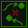
Flank
No Stat Ranger Stance
A well-practiced tactical stance that causes your auto-attacks to deal 33% more damage against enemies being target by a party member on the other side of them for 30 seconds.
-
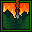
Wildfire Arrow
Focus Ranger Combat Skill
Shoot a flaming arrow at your target, dealing fire damage and setting your target on fire for 6..45..55 damage over the next 16 seconds. If that fire would be put out early, they immediately take 12..80..97 fire damage.
-
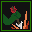
Arrow Jab
Might Ranger Skill
Stick target enemy within melee range with an arrow for 2..35..43-4..50..62 physical damage.
-
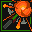
Burst Shot
Might Ranger Combat Skill
Shoot an explosive bolt at target enemy, if they are more than 5 meters away it explodes dealing 1..28..35-4..40..49 fire damage to every enemy within melee range of the explosion.
-
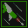
Rapid Shot
Might Ranger Combat Skill
With one quick motion you instantly shoot a bolt at target enemy that deals 2..22..27-3..31..38 damage.
-
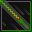
Power Shot
Might Ranger Combat Skill
Launch a high-powered bolt that can travel further than your normal shots. If it hits it deals +1..17..21 armor-ignoring damage.
-
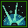
Healing Trap
Class Core Ranger Trap
Throw a healing trap towards your mouse cursor. If a friend walks over the trap it triggers, healing everyone in range for 1..74..92-2..102..127 every two seconds for ten seconds.
-
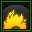
Explosive Trap
STAT_FIFTH Ranger Trap
Throw an explosive trap towards your mouse cursor. If an enemy walks over the trap it explodes for 3..79..98-6..110..136 damage to all enemies.
-
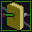
Magehunter Shot
Resolve Ranger Combat Skill
Attack your target immediately, if they are casting a spell that spell is interrupted and up to 5..20..24 of their energy is locked for 30 seconds.
-
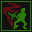
Evasive Motion
Survival Ranger Stance
Move erratically for 10 seconds, giving you a 15..75..90% chance to dodge incoming attacks and damaging spells.
-
Aim
No Stat Ranger Skill
Zero in on your prey. The next attack you make will be a critical hit. (you'll stop automatically attacking when you use this skill)
-
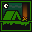
Survivor Spirit
Survival Ranger Skill
If you are effected by a condition or a curse, you utilize your survival skills to heal yourself for 4..56..69-8..82..100.
-
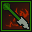
Wounding Bolt
Might Ranger Combat Skill
Launch a barbed arrow that wounds target enemy for 20 seconds, reducing healing they receive by 25..80..94% and causing them to bleed for 4..48..59 damage over 20 seconds.
-
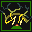
Stun Trap
Class Core Ranger Trap
Throw a stun trap that has 5 health. When an enemy walks over the trap they are stunned, preventing them from moving or taking action for 3..8..9 seconds.
-
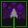
Toxic Shot
Focus Ranger Combat Skill
Shoot a poison-tipped bolt at target foe that deals +1..8..10 damage and poisons them, dealing 8..70..86 damage over the next 30 seconds.
-
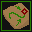
Backup Plan
Resolve Ranger Skill
Restore 1..10..12 energy for each skill you currently have recharging.
-
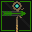
Disarming Attack
Resolve Ranger Combat Skill
Fire a bolt aimed at target enemy's weapon. If they are attacking they will be disarmed, lengthening the time until their next auto-attack by 0..10..12 seconds.